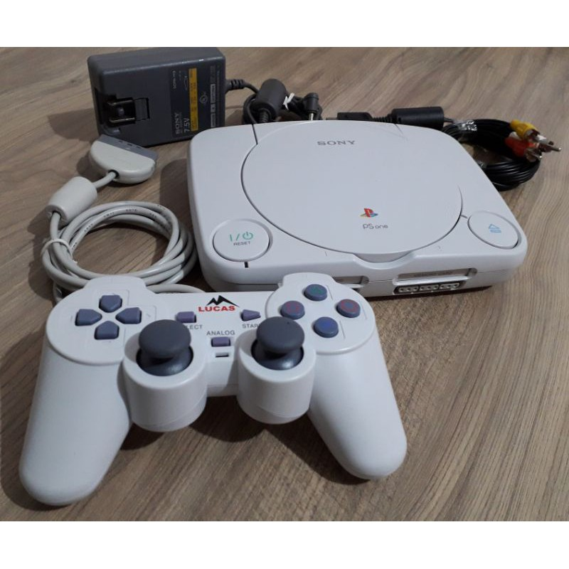

PlayStation, uma marca desenvolvida pela Sony Interactive Entertainment, tem sido uma força dominante na indústria de jogos desde a sua criação em 1994.
Com uma rica história de consoles inovadores, jogos envolventes e tecnologia ponta, o PlayStation conquistou os corações de milhões de jogadores em o mundo.Este artigo irá aprofundar a evolução do PlayStation, seus principais o mundo.Este artigo irá aprofundar a evolução do PlayStation, seus principaisconcorrentes e as experiências únicas que ele oferece aos seus usuários.
A evolução do PlayStation: A jornada do PlayStation começou com o lançamento do seu primeiro console no Japão em 3 de dezembro de 1994. Ao longo dos anos, a marca se expandiu para incluir quatro consoles domésticos, dois consoles portáteis, uma revista de jogos e uma rede online. A marca PlayStation é conhecida pelo seu compromisso em ultrapassar os limites da tecnologia de jogos, como pode ser visto com a introdução da tecnologia de disco óptico nas suas consolas.
PlayStation: foi o primeiro console de videogame fabricado pela Sony, lançado em 3 de dezembro de 1994 no Japão, 9 de setembro de 1995 nos Estados Unidos e em 29 de setembro de 1995 na Europa.
PlayStation 2: Foi lançado no dia 4 de março de 2000 no Japão, no dia 26 de outubro na América do Norte, e posteriormente, no dia 24 de novembro na Europa. É o sucessor do PlayStation.

PlayStation 3: É o sucessor do PlayStation 2 e faz parte da marca PlayStation de consoles. Foi lançado em 11 de novembro de 2006, no Japão, 17 de novembro de 2006 na América do Norte e em 23 de março de 2007 na Europa e Oceania.
 PlayStation 4: é um videogame da Sony lançado em 2013. O console tem três versões principais: fat, slim e Pro
PlayStation 4: é um videogame da Sony lançado em 2013. O console tem três versões principais: fat, slim e Pro
 PlayStation 5: também conhecido simplesmente como PS5 — é o console da atual geração da Sony, lançado
oficialmente pela japonesa em 2020
PlayStation 5: também conhecido simplesmente como PS5 — é o console da atual geração da Sony, lançado
oficialmente pela japonesa em 2020
 site da playstation oficial
site da playstation oficial
aqui estão alguns jogos mais vendidos do playstation 2